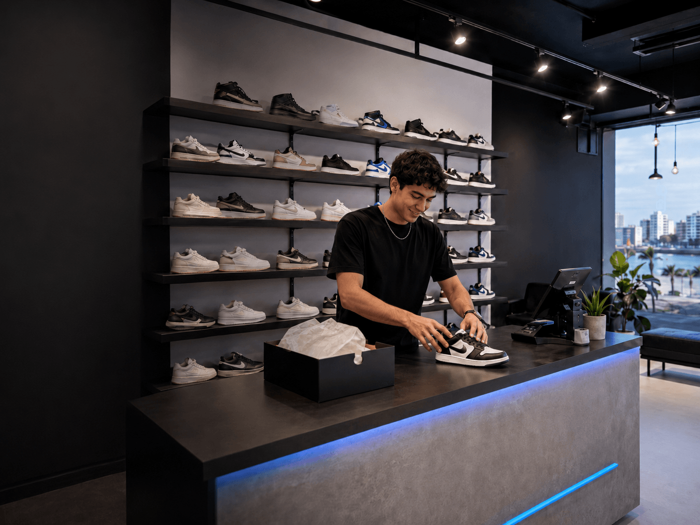

Urban Steps nació en Lima con la idea de crear una tienda donde las personas pudieran encontrar zapatillas modernas, cómodas y de buena calidad en un solo lugar. Desde el inicio, buscamos ofrecer modelos que se adapten a distintos estilos de vida, desde quienes prefieren un look urbano y casual hasta quienes necesitan zapatillas deportivas para sus actividades diarias.
Comenzamos con una pequeña selección de productos, pero gracias a la confianza de nuestros clientes fuimos ampliando nuestro catálogo. Con el tiempo incorporamos zapatillas deportivas, urbanas, clásicas y ediciones limitadas, siempre buscando opciones actuales y atractivas.
Hoy continuamos creciendo con el compromiso de brindar una atención cercana, productos de calidad y una experiencia de compra sencilla. En Urban Steps creemos que cada zapatilla representa una forma de expresar la personalidad y que el estilo comienza desde los pies.
Nuestra misión es ofrecer zapatillas que combinen calidad, comodidad, estilo y autenticidad, brindando alternativas para diferentes gustos y necesidades. Buscamos que cada cliente pueda encontrar un modelo que se adapte a su personalidad, rutina y forma de vestir.
También nos comprometemos a brindar una atención amable, rápida y confiable, acompañando al cliente durante todo el proceso de compra. Trabajamos para ofrecer información clara sobre nuestros productos, medios de pago seguros y entregas eficientes.
En Urban Steps queremos que cada compra sea una experiencia positiva y que nuestros clientes se sientan satisfechos con el producto y con la atención recibida.
Nuestra visión es convertirnos en una tienda reconocida en el mercado peruano por ofrecer zapatillas modernas, cómodas y de calidad. Queremos ser una de las principales opciones para las personas que buscan renovar su estilo y adquirir productos confiables.
A futuro, buscamos ampliar nuestra variedad de marcas y modelos, fortalecer nuestra tienda virtual y llegar a más clientes en diferentes partes del país. También queremos incorporar nuevas tendencias y mejorar constantemente nuestros servicios.
Aspiramos a construir una comunidad que valore la comodidad, la autenticidad y el estilo, manteniendo siempre una relación cercana y confiable con nuestros clientes.
En Urban Steps trabajamos guiados por valores que nos permiten ofrecer una atención responsable y una experiencia de compra confiable.
La calidad es fundamental para seleccionar productos cómodos y duraderos. La responsabilidad nos ayuda a cumplir con nuestros clientes y entregar cada pedido de manera segura. La honestidad nos permite brindar información clara sobre los productos, precios y condiciones de compra.
También valoramos el respeto, ofreciendo una atención amable e inclusiva para todas las personas. La innovación nos impulsa a conocer nuevas tendencias y mejorar nuestros productos y servicios. Finalmente, el compromiso representa nuestra dedicación para satisfacer las necesidades de cada cliente y seguir creciendo como empresa.